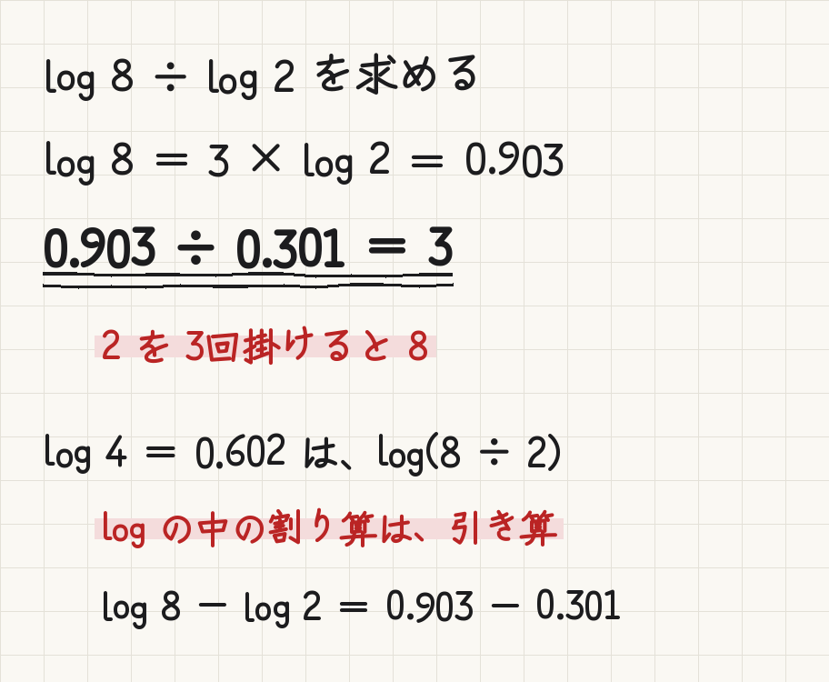

log の割り算：log 8 ÷ log 2 は、log 4 ではなく 3
log の割り算には、2つの形があります。log の中の割り算 log(8 ÷ 2) は、log 8 − log 2 という引き算になります。log どうしの割り算 log 8 ÷ log 2 は引き算にはならず、答えは 3 です。log の掛け算が足し算になると覚えた直後に、この2つを取り違えて手が止まります。
どこで止まるか
2つの割り算は、別の計算
| 書き方 | 意味 | 8 と 2 のとき |
|---|---|---|
| log(A ÷ B) | log の中の割り算。引き算になる | log 8 − log 2 ＝ 0.903 − 0.301 ＝ 0.602（log 4 と同じ） |
| log A ÷ log B | log どうしの割り算。B を何回掛けると A になるか | 0.903 ÷ 0.301 ＝ 3 |
log 8 は「10 を何乗すると 8 になるか」、log 2 は「10 を何乗すると 2 になるか」です。8 は 2 を3回掛けた数なので、log 8 は log 2 のちょうど3倍です。だから、割ると 3 が残ります。
括弧の位置で、どちらの形かを読み分けます。log の後ろの括弧の中で割っていれば引き算、log と log の間に ÷ があれば、ふつうの割り算です。
どこで使うか
「同じ倍率を何回掛けると、目標の倍率に届くか」を出すときに、log どうしの割り算が出てきます。増幅器を何段つなぐか、半分に減る回数が何回か、といった問いです。
数値で確かめる
電力を2倍にする増幅器を何段つなぐと、1000倍以上になるかを求めます。log₁₀ 2 ＝ 0.3010 とします。
n ＝ log 1000 ÷ log 2 ＝ 3 ÷ 0.3010 ≒ 9.97
9段では足りないので、10段
確かめ：2倍は約 3 dB、1000倍は 30 dB。30 ÷ 3 ＝ 10段
dB で数えると、log どうしの割り算は、dB の割り算として見えます。2 を10回掛けると 1024 で、1000 を超えます。

log の割り算のまとめ
log A ÷ log B：B を何回掛けると A になるか
log 8 ÷ log 2 ＝ 3、log 9 ÷ log 3 ＝ 2、log 1000 ÷ log 10 ＝ 3
掛け算と割り算を、足し算と引き算に直す決まりは、対数の計算：log 2 と log 3 だけで、ほかの数の log を出すで扱っています。
別の呼び方：log A ÷ log B の形は、「底の変換」と呼ばれる式です。底（てい）は、何を何乗するかの元の数で、ここでは 10 です。2 を底とする対数を、10 を底とする対数で書き直すと、この形になります。
log₁₀ 3 ＝ 0.4771 として、log 9 ÷ log 3 と、log(9 ÷ 3) は、それぞれいくつですか。
答え
log 9 ÷ log 3 ＝ 0.9542 ÷ 0.4771 ＝ 2（3 を2回掛けると 9）。log(9 ÷ 3) ＝ log 3 ＝ 0.4771。紙の上で繰り返して固めたい方へ：書き込み式の問題集の案内 ／ 数を入れて確かめる：デシベルの計算の道具
最終更新：2026年11月20日